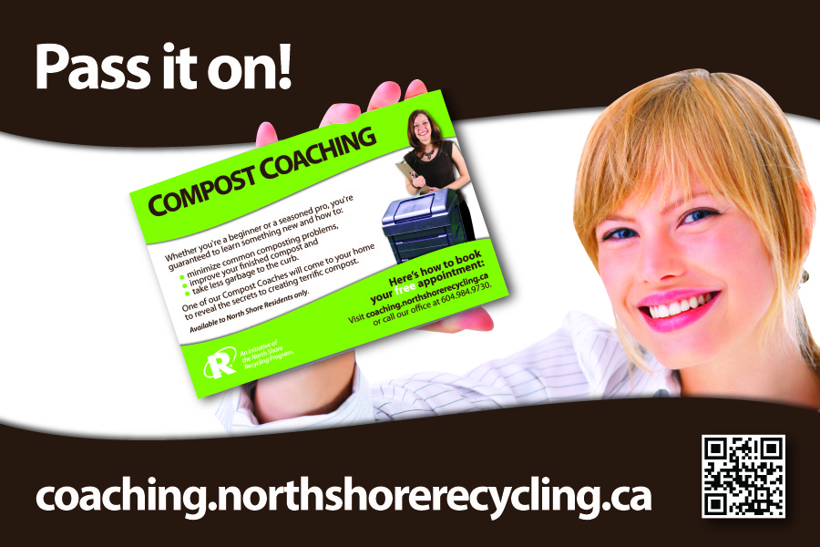

Tools Used
- Building Motivation Over Time
- Feedback
- Overcoming Specific Barriers
- Home Visits
- Neighbourhood Coaches and Block Leaders
- Word of mouth
Initiated By
North Shore Recycling Program
Results
- Households not previously composting increased composting volumes by up to 450 kg/year; those already composting increased volumes by 25%.
- Higher quality, better-managed compost and fewer bear / pest problems.
- Coached households reduced waste generation by 250 kg/year.
- Curbside set-outs from Coached households were reduced by 350 kg/year.
Compost Coaching: House-Calls Help Reduce Waste
This case study is a great model for increasing composting rates, reducing waste generation and reducing tonnages placed curbside for collection through coaching. It also reports on a study of diversion rates from backyard composting that showed that diversion from backyard composting is usually under-estimated.
Background
The North Shore Recycling Program (NSRP) was the recycling, composting and waste reduction department for three municipalities on the west coast of Canada: the City of North Vancouver, the District of North Vancouver, and the District of West Vancouver. The municipalities had a combined population of about 180,000 residents. In 2007, the NSRP set out to reduce their municipalities’ curbside organic waste through the creation of a compost program called “Compost Coaching”.
Note: To minimize site maintenance costs, all Tools of Change case studies are written in the past tense, even if they are ongoing – as is the case with this particular program.
Setting Objectives
The NSRP’s vision was to reach their region’s waste diversion goal of 70% from garbage by 2015. They set out to investigate two questions: First, how much does a single family household actually keep off the curb by composting? Second, using a Community-Based Social Marketing approach, what was the best method to achieve maximum residential waste reduction within the NSRP’s available resources?
Getting Informed
During their research, the NSRP realized that the Metro Vancouver Region had been underestimating the contribution from backyard composting. It had been using a diversion rate that only took yard-trimmings into account and that was a quarter-century out-of-date: 250kg (560lbs) of organics per household per year. To see what this number would be from a family composting all their organics (including food scraps), the NSRP had twenty five families weigh all of the organics they composted on-site – from inside the home and from the yard – for a year. These residents were provided with personalized compost instruction and training for taking and reporting measurements.
The study found that a single, trained household, on average, kept 450 kg (992lb) of organic material off the curb per year through on-site composting. Combined with data from an earlier phone survey of untrained residents who composted, the study also found that a composting household without the benefit of any training kept about 360 kg (794lb) off the curb each year.
In order to learn more about their audience, their desired behavior change, and best practices for outreach, the NSRP conducted waste audits and literature reviews, and began testing their existing outreach programs.
The literature review found that personalized and repeated messaging, personal contact, bin delivery and set up, having a ‘real person’ to help troubleshoot, and personal follow-ups increase bin usage and long term success. The literature review also revealed that word-of-mouth and peer-examples were the strongest motivators for backyard composting. Thus, “Compost Coaching” was born.
Delivering the Program
Program Set-up and Marketing:
Compost Coaching was offered free to residents to remove any financial barriers to participation.
To promote the program, the NSRP designed a poster that was placed in local garden shops and community centers, as well as an 8 cm promotion card that was given to residents who had asked for help with composting. The card had a direct link to their online booking page, which, in turn, provided easy access to all of their composting information and award-winning How-To videos. (Overcoming Specific Barriers; Prompts; Vivid, Credible, Empowering Communication)
Poster

Front of the card
Back of the card
In addition, a promotion sticker was placed across the top seam of every compost box sold by the municipalities. (Prompt)
Sticker
To allow news of the program to reach into the realm of social media, NSRP also created a short promotional video, which was posted on their website and shared on Facebook and Twitter (Mass Media)
Before Appointments:
The initial residential composting appointments were set up through an online system. Composting instructors or “Coaches” as they were referred to in this program, would fill in their availability through the office database, which was instantly visible on a public online calendar.
A resident who wanted to book a coaching session then went to the NSRP’s website and made an appointment by selecting a convenient time and completing a short online form. The information from this form was automatically entered into a database, so that staff and Coaches had access to the resident’s contact information. A resident could also phone the office to make a booking.
Once an appointment was made, the resident received a confirmation email, detailing the date and time of his appointment, who his Coach would be, and what to expect at the session. The confirmation also included an invitation to ask friends and neighbors to join. At the same time, the Coach received an email notification about the new booking. (Word of Mouth; Vivid, Personalized, Credible, Empowering Communication)
A few days before the appointment, the resident received an automated email reminder, and the Coach phoned the resident to remind her of her appointment and ask a few questions. At this point, if picking up the bin from the depot had been a barrier to composting, the Coach could deliver the free bin directly to the resident’s home. (Overcoming Specific Barriers; Personalized, Credible, Empowering Communication)
During Appointments:
The in-home session was designed to be fun, informal, and guided by the participants’ needs. Although the Coaches had a basic script for teaching compost techniques, the conversation often shifted depending on the questions asked by the resident, as well as on the condition of her compost bin. The session covered basic composting information and tips for coexisting with bears, all within 30-45 minutes.
At the end of the session, the Coach offered a “Pass it On” card, and said that he would call to check on progress in six to eight weeks. The “Pass it On” postcard enabled the participant to be an ambassador for composting while “giving” a free Compost Coaching session to his friends, family or neighbors. (Home Visits; Overcoming Specific Barriers; Vivid, Personalized, Credible, Empowering Communication; Word of Mouth Communication)
Front of the card

Back of the card
After Appointments:
Within a day or two, the Coach sent a personalized Thank You email with any requested additional information and a reminder that she would check in again by phone. Six to eight weeks later, the Coach made two attempts to follow-up, checking in on how the resident was doing with the challenges discussed during their session. (Building Motivation Over Time; Overcoming Specific Barriers; Vivid, Personalized, Credible, Empowering Communication)
Timeline
- Waste Audits (2007)
- Literature Review (2007)
- Single-Family Curbside Collection Telephone Survey (2008)
- Backyard Composter Purchasers Follow-up Survey (2008)
- Diversion due to Backyard Composting: Calibration Study (2010-2011)
- Test Outreach Options (2008-2009)
- Outreach Alternatives to Curbside Collection (Scenario Analysis and Report, 2009)
- Ongoing Evaluation (2008-2013)
- Implementation (2011-2013)
Financing the Program
The NSRP had one staff member who dedicated 0.3 of a full‐time equivalent to all program management. Compost Coaches were paid staff, hired as needed.
Even including start‐up costs, the payback period (when savings in tipping fees outweighed program expenses) was two to five years depending on program complexity. The program budget was approved based on anticipated tipping fee savings due to reduced curbside collection tonnages.
Measuring Achievements
Impact: The impact of the program was estimated using pre- and post-pilot surveys with residents receiving the program, and with the 25 families that participated in the “compost calibration” study.
Cost-Benefit Analysis: The NSRP estimated program expenses compared to avoided tipping fees, in order to demonstrate whether their program was cost-effective.
Results
Impact: Composting Behaviours and Tonnages
Based on their surveys, the NSRP determined that personalized yard visits were a promising outreach method. Households that had not previously being composting increased the volume of their composted materials by up to 450 kg/year. On average, households that were already composting increased their composting volumes by 25%. Participants also more actively managed their bins, improved their confidence in their composting abilities, created higher quality compost, finished composting faster, and reduced the hazards from bears and pest problems.
Overall, the NSRP’s research found that the weight of organic waste diverted by backyard composting was similar to the tonnages collected through the existing curbside organics collection program. Both were able to reduce the burden on North Shore’s curbside garbage collection systems, thus saving the municipalities millions of dollars each year. However, backyard composting was able to accomplish this goal at a fraction of the cost of curbside organics collection.
The number of residents reached through these “house-calls” was one-and-a-half times the number of people who had signed up for the service; since these yard visits had the feel of an informal, fun social call, residents often invited their friends, family or neighbors to join them at their at-home compost talks.
The resources the NSRP had been putting into supporting composting efforts had been close to zero, but the personal contact and support made all the difference to compost bin usage and long-term success, and it created composting champions in many different peer networks in their community.
Impact: Curbside Set-Outs and Diversion Rates
The municipalities also saw changes at the curb for those households that had had coaching: garbage collected decreased from 496 kg/year to 225 kg/year and yard trimmings decreased from 293 kg/year to 216 kg/year. (Unfortunately, blue box-type recyclables were not measured.) The result of this shift at the curb means that calculated diversion rates for these coached households had increased from 53% to 68%, approaching the Region’s diversion targets.
Impact: Waste Generation
A side-benefit to the direct objective of Compost Coaching was measured: households’ waste generation profiles changed with Coaching. At baseline, untrained households generated 1,428 kg/year of garbage, recyclables, curbside-collected yard trimmings and backyard composted organics. After Coaching, households generated only 1,171 kg/year of these same materials, a decrease of 257kg/year of waste actually generated.
This surprising result shows that the regional diversion targets were reached NOT by shifting materials from one collection stream to another BUT by actually reducing waste generated and increasing quantities of organic waste managed on-site by the people responsible for it.
Cost Benefit Analysis: Even including start-up costs, the payback period (when savings in tipping fees outweighed program expenses) was two to five years.
Contacts
Elizabeth Leboe or Jenn Meilleur
info@nsrp.bc.ca
604.984.9730
Notes
Program website: coaching.northshorerecycling.ca
This scase study was written in 2015 by Jay Kassirer and Jennifer Meilleur, based on Jenn's presentation, “Compost Coaching: House-Calls Help Reduce Waste”. That presentation was delivered at the webinar, “Changing Recycling and Composting Behaviors Through Social Marketing”, sponsored by Keep America Beautiful and Tools of Change on May 9th, 2013.